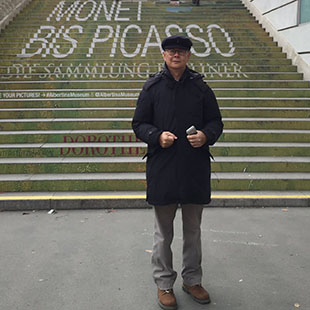

冯汉荣|Stanley Fung
- 馮漢榮，研究香港畫家。
- 畫類包括油畫，中國畫，
- 尤擅長水彩畫。
- 從事美術研究及教學三十年，開設海怡畫苑。
- 現任香港美術會會長。
- 長期為推動本港美術 而努力。
- 以鼓勵普及美術
- 促進本港美術交流
- 及提高美術水平為宗旨。
简历|Resume
- １９６７加入香港美術會
- １９６８香港美術會年展
- １９７０香港工專美術設計畢業
- １９７３嶺海藝專深造班畢業十六人畫展
- １９７５任教於嶺海藝專
- １９７６告羅士打行十人畫展
- １９７８隨油畫家陳學書老師修習油畫
- １９８６香港畫家聯會年展
- １９８７嶺海校友聯展廣州香港畫家聯合作品展
- １９８８香港畫家聯會
- 湖北美術院聯展香港畫家聯會
- 四川當代美術家交流展
- １９９０香港美術研究會作品聯展
- １９９２香港畫家作品聯展
- １９９２－１９９８開設海怡畫苑，從事美術教學
- ２０００韓國亞細亞美術招待展
- ２００１第三屆粵港澳水彩畫邀請展
- ２００２澳門第四屆粵港澳水彩畫邀請展
- ２００５推選為香港美術會會長
- ２００６香港美術會８０週年紀念展
- 廣州美術學院中國畫深造
- 香港城市大學草書研究文憑
- ２００７廣州美術學院畢業展
- 浮光掠影 ― 馮漢榮水彩畫展
- 海峽兩岸四地水彩畫邀請展
- ２００８獲韓國頒發亞細亞美術大獎
- 組織及推動第一屆韓國、香港、澳門美術交流展
- 我愛巴黎 ― 三人行畫展
- ２００９都市閒情―馮漢榮水彩畫展
- 第十一屆全國美展
- ２０ 1 0墨. 彩 . 光 . 馮漢榮中國畫展

Design By @KyrieMich